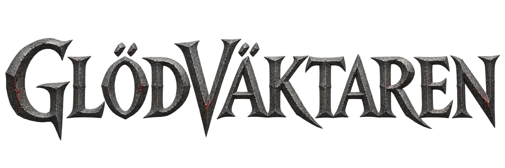

SKOGENS LJUS
Glödväktaren

Ljuset har tystnat. Dina svar kan väcka det.
Addition och subtraktion till 20
Resan sparas automatisktDIN RESA
Välj din matematik
Varje matteval har sin egen sparade resa.
Bilder och källor
Silverriddaren, animationerna och stridseffekterna kommer från pixelfx, av patch-gg, med delar av Hugo Duprez / Sprite Fusion och rehan-remade / Hollow Crown.
Miljöbilderna, spåkvinnan och den ritade titeln är skapade för spelet med OpenAI image_gen. Allt bild- och ljudmaterial laddas lokalt från Pluggparken.